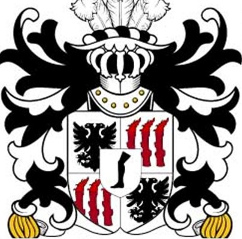
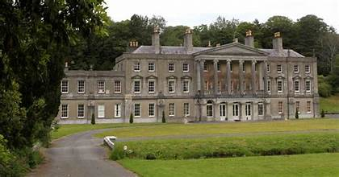
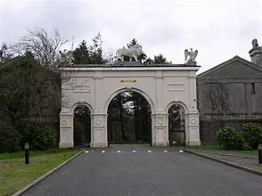

Cilmin Droed Ddu

Cilmyn war ein gewöhnlicher Bauer, obwohl er es vorzog, zu jagen und zu fischen. Er träumte davon, dass er eines Tages genug Geld haben würde, um die Landwirtschaft ganz aufzugeben.
Arfbais Glynllifon
Eines Abends traf sich Cilmyn mit einem weisen Mann, der jede Hexe in der Gegend besiegen wollte. Sie beschlossen beide, dass sie sich gegenseitig helfen könnten, wenn Cilmyn mutig genug waere.
Eine Gruppe von Hexen lebte an den Hängen des Eifl-Gebirges, und sie verfluchten oft die Gegend, was dazu führte, dass die Milch in jeder Kanne sauer wurde, die Ernte ausfiel und die Tiere starben. Jeder Zauberspruch, den sie hatten, wurde in ein großes Buch geschrieben, das unter einem weißen Stein tief in einer Höhle auf dem höchsten Gipfel des Eifl aufbewahrt wurde. Wenn es Cilmyn gelang das Buch zu stehlen, dann würde das der Hexenzauberei ein Ende versetzen.
Plas Glynllifon
Er sollte versuchen, das Buch zu stehlen, waehrend die Bestie, die es bewachte, schlief. Dabei muesste er unterwegs auch einen giftigen Bach am Fuße des Berges überqueren. Sowohl die Hexen als auch die Bestie hatten grosse Angst vor dem Bach und wagten es nicht, sich ihm zu nähern. Cilmyn lieh sich das Pferd des Weisen und machte sich auf den Weg, um das Buch zu stehlen. Er sah sofort den giftigen Bach, denn das umliegende Land war trostlos, und der Boden war dunkler als alles, das er je gesehen hatte. Das Pferd sprang anmutig über den Bach. Nachdem er das Pferd an einen Baum gebunden hatte, machte sich Cilmyn auf den Weg zum Gipfel. Nach einer Weile konnte er Gackern und Singen hören. Er schlich sich leise zu der Höhle auf dem Gipfel. Er sah die Höhle und wartete geduldig auf allen Vieren und hörte aufmerksam zu. Er hörte schweres Atmen und Schnarchen aus der Höhle. Die Bestie schlief. Als er in die Höhle kroch, sah er die Bestie, die im Tiefschlaf war und eine Hand auf dem weissen Stein hatte, unter welc
Mynedfa i Barc Glynllifon
hem sich das Buch der Zaubersprüche befand. Der Gestank war unerträglich und Cilmyn hatte ziemlich Angst vor der Bestie, die doppelt so groß war wie der größte Mann. Schließlich gelang es Cilmyn, den Stein sehr vorsichtig zu bewegen ohne dabei die Bestie zu erwecken. Er sah das goldene Buch der Zaubersprüche, auf dessen Umschlag Edelsteine glitzerten. Er griff nach dem Buch und ergriff es, bevor er sich auf den Weg nach draußen machte. Als er wieder nach draußen kroch, stass sein Fuß an einen Steinhaufen. Die Bestie erwachte und rannte Cilmyn nach. Cilmyn rannte so schnell er konnte, mit der Bestie dicht himter ihm. Er erreichte sein Pferd, aber er sah bald, dass es sich in den Fängen einer der bösen Hexen befand. Cilmyn rannte, und da er keine andere Wahl hatte, sprang er über den giftigen Bach. Mit seinem rechten Fuß erreichte er das Ufer, aber das Gewicht des Zauberbuches ließ seinen linken Fuß bis zum Knie unter Wasser rutschen. Er zog sein Bein sofort aus dem Wasser, aber er konnte sofort spüren, wie er das Gefühl in seinem Unterschenkel verlor.
Er humpelte nach Hause und gab das Buch dem weisen Mann, dem es gelang, alle Flüche der bösen Hexen rueckgaengig zu machen. Cilmyn wurde ein reicher Mann, indem er die Edelsteine und das Gold verkaufte, welche das Cover des Buches geschmückt hatten. Er baute ein Herrenhaus und lebte dort für den Rest seiner Tage. Cilmyns linker Unterschenkel blieb jedoch schwarz von der giftigen Wirkung des Baches, was ihm den Namen Cilmyn Droed-ddu (Cilmyn Schwarzfuss) gab. Sein Unterschenkel ist auf dem Familienwappen von Plas Glynllifon abgebildet.